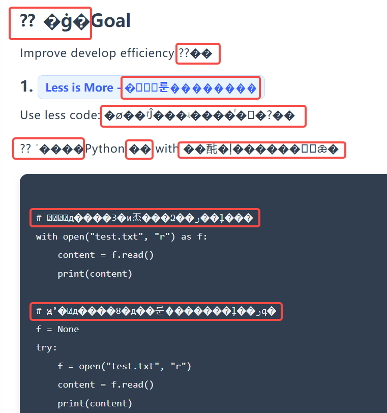
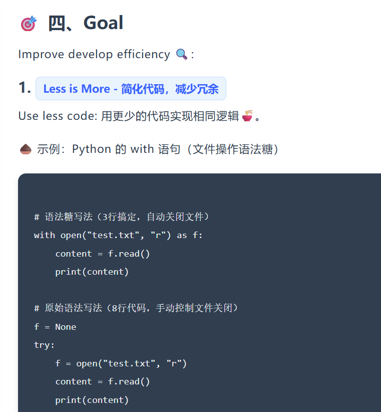

😎 90%的前端初学者都遇过的坑，你能识别吗？
🤔 课前小调查：你遇到过HTML乱码问题吗？
下列哪种现象，是HTML中文乱码的典型表现？
⏰ 快速思考，选择你的答案吧！
👉 选对了？恭喜你对乱码有基础认知！选错了？没关系，学完这节课你就能轻松识别～
📚 HTML 乱码排查与解决完全指南（教学版）
🤔 一、什么是 HTML 乱码？
HTML 乱码是指浏览器在解析和渲染 HTML 页面时，因字符编码识别错误、字符集不匹配等原因，无法正确显示页面中的文字（包括普通文本、特殊符号、Emoji 表情等），最终呈现为 问号（???）、方块（□□□）、乱码字符（������）或非预期文字 的现象。
核心特征 📌：
- 1. 原本的正常文字（如中文、Emoji）无法识别，显示为无意义符号
- 2. 乱码仅影响文字显示，不影响 HTML 标签的解析（页面结构通常正常）
- 3. 常见场景：中文显示乱码、Emoji 表情显示为问号/方块、特殊符号异常
示例：同一个网页乱码显示和无乱码显示时的对比


🔍 二、HTML 出现乱码的可能原因 & 对应解决方案
原因1：HTML 文件未声明正确的字符编码
浏览器默认使用的编码（如 ISO-8859-1）不支持中文、Emoji 等字符，若 HTML 头部未明确声明 UTF-8 编码（支持所有字符），会导致解析失败。
解决方案：添加 UTF-8 编码声明
在 HTML 的 <head> 标签内，必须添加以下元标签，明确指定字符编码为 UTF-8：
💡 小贴士：该标签建议放在 <head> 标签的最前面，避免浏览器先解析其他内容导致编码识别异常。
原因2：HTML 文件保存时编码与声明编码不一致
这是最常见的原因！即使 HTML 中声明了 UTF-8 编码，但如果文件本身在编辑器中以 GBK、GB2312、ASCII 等编码保存，字符会被错误存储，浏览器用 UTF-8 解析时就会出现乱码。
解决方案：以 UTF-8 编码保存文件
- 打开编辑器（以 VS Code 为例），打开目标 HTML 文件
- 查看编辑器右下角，显示当前文件编码（如 GBK、UTF-8）
- 若不是 UTF-8，点击右下角编码名称，选择「通过编码保存」
- 在弹出的列表中选择「UTF-8」（推荐「UTF-8 无 BOM」格式），保存文件即可
💡 小贴士：主流编辑器（VS Code、Sublime、WebStorm）均支持 UTF-8 保存，默认建议设置编辑器默认保存编码为 UTF-8。
原因3：服务器传输时未设置正确的响应头
当浏览器从服务器获取 HTML 文件时，服务器会返回响应头信息，若响应头中未指定 `Content-Type: text/html; charset=utf-8`，浏览器可能会用默认编码解析，导致乱码。
解决方案：配置服务器响应头
- 本地测试（无服务器）：可忽略该问题，直接打开 HTML 文件通常不受影响
- Nginx 服务器：在配置文件中添加 `charset utf-8;`
- Apache 服务器：在 .htaccess 文件中添加 `AddDefaultCharset UTF-8`
- 后端开发（PHP/Java）：通过代码设置响应头（如 PHP：`header("Content-Type: text/html; charset=utf-8");`）
原因4：字体缺失对应字符集
HTML 中指定的字体（如 Arial、微软雅黑）若不包含中文、Emoji 等字符集，浏览器无法找到对应字形，会显示为方块或乱码（尤其影响 Emoji 表情）。
解决方案：指定支持多字符集的字体
在 CSS 中，为元素指定包含 Emoji/中文的字体列表，优先使用系统自带的 emoji 友好字体：
/* 优化字体设置，支持中文和Emoji */
body {
font-family: "Microsoft YaHei", "微软雅黑", "Segoe UI Emoji", "Apple Color Emoji", Arial, sans-serif;
}
原因5：特殊字符/Emoji 编码错误或不兼容
1. 手动输入了无效的 Emoji/特殊字符，或使用了浏览器/系统不支持的新版 Emoji（如 Unicode 13.0 以上）；2. HTML 实体编码书写错误（如 Emoji 实体编码位数不足），导致解析失败。
解决方案：使用标准字符/实体编码
- 替换无效字符：删除乱码的 Emoji/特殊字符，重新输入标准 Emoji（如直接复制粘贴 🐍、🍬）
- 使用 HTML 实体编码：对于 Emoji，可使用 Unicode 实体编码（如 🐍 对应 `🐍`，🍬 对应 `🍬`），兼容性更强
- 避免老旧环境：对于旧浏览器/系统（如 IE、Windows 7），尽量使用基础版 Emoji，避免新版特殊 Emoji
原因6：中间工具破坏文件编码
HTML 文件经过文本转换器、版本控制工具、在线编辑工具等处理时，工具若不支持 UTF-8 编码，会强制转换编码或删除无法识别的字符（如 Emoji），导致乱码。
解决方案：使用支持 UTF-8 的工具
- 避免使用老旧工具：选择 VS Code、Git 等支持 UTF-8 的工具处理文件
- 传输文件时保持编码：通过压缩包（ZIP）传输 HTML 文件，避免在线预览工具自动转换编码
- 版本控制忽略编码变更：在 Git 中配置 `git config --global core.quotepath false`，避免中文文件名/内容编码异常
🛠️ 三、实战案例：Emoji 乱码问题排查与解决
案例背景 📖
某 HTML 教学页面（Python 语法糖讲解）中，Emoji 表情（🐍、🍬、🚀 等）全部显示为 ������ 或 ???，页面结构正常，中文显示正常，仅 Emoji 乱码，需排查并解决。
步骤1：检查 HTML 编码声明
首先确认 HTML 是否声明了 UTF-8 编码，这是基础前提。
- 打开问题 HTML 文件，查看 <head> 标签内是否有 ``
- 若缺失：添加该标签并放在 <head> 最前面，保存文件后刷新页面
- 本案例中：已存在该标签，排除此问题
步骤2：检查文件保存编码
这是本案例的核心问题！Emoji 乱码大概率是文件保存编码非 UTF-8 导致。
- 用 VS Code 打开问题 HTML 文件，查看右下角编码（显示为「GBK」，异常）
- 点击右下角「GBK」，在弹出菜单中选择「通过编码保存」
- 在编码列表中选择「UTF-8」（无 BOM 格式），确认保存
- 此时打开文件，乱码的 Emoji 仍显示异常，需要重新替换 Emoji
步骤3：重新替换标准 Emoji 字符
文件编码修正后，原有乱码的 Emoji 已被损坏，需手动替换。
- 逐个删除页面中的 ������ 乱码字符
- 重新插入标准 Emoji：可直接复制粘贴（🐍、🍬、🚀、🧩 等），或使用 HTML 实体编码（如 `🐍` 对应 🐍）
- 示例：将标题从 "������ Python 语法糖 核心知识点 ������" 改为 "🐍 Python 语法糖 核心知识点 🍬"
- 替换完成后，保存文件（确保仍为 UTF-8 编码）
步骤4：优化字体配置，提升兼容性
为避免因字体缺失导致 Emoji 再次乱码，优化 CSS 字体设置。
- 找到页面的 CSS 全局样式（body 选择器）
- 在 font-family 中添加 Emoji 友好字体：Segoe UI Emoji、Apple Color Emoji
- 优化后的样式如下：
body {
font-family: "Microsoft YaHei", "微软雅黑", "Segoe UI Emoji", "Apple Color Emoji", Arial, sans-serif;
background: linear-gradient(135deg, #e6f0fa 0%, #d1e0f7 100%);
/* 其他样式保持不变 */
}
步骤5：验证效果
- 用主流浏览器（Chrome、Edge、Firefox）打开修正后的 HTML 文件
- 检查 Emoji 表情是否正常显示，中文及其他文字是否无异常
- 若在服务器上部署，额外检查服务器响应头是否包含 `Content-Type: text/html; charset=utf-8`
- 本案例验证结果：Emoji 正常显示，乱码问题完全解决 ✅
📝 四、课后交互式练习题
🚀 快来检验你的学习成果吧！
1. 下列哪项是 HTML 中文乱码的最核心原因？
2. 为了避免 HTML 乱码，meta 标签声明 UTF-8 应放在哪里？
3. 下列哪种方法可以解决 Emoji 表情显示为方块的问题？
📝 五、核心知识点总结
HTML 乱码排查与解决核心流程 🚀：
- 1. 先确认 HTML 是否声明 ``（基础步骤）
- 2. 再检查文件保存编码是否为 UTF-8（最核心步骤，优先排查）
- 3. 若为 Emoji 乱码，补充优化字体配置 + 替换标准 Emoji
- 4. 服务器部署场景，检查并配置服务器响应头
- 5. 避免使用不支持 UTF-8 的工具处理 HTML 文件
通过以上步骤，可解决 99% 的 HTML 乱码问题（包括中文乱码、Emoji 乱码等常见场景），确保页面文字正常显示。希望这节课能帮助你轻松应对 HTML 乱码问题 🎉！